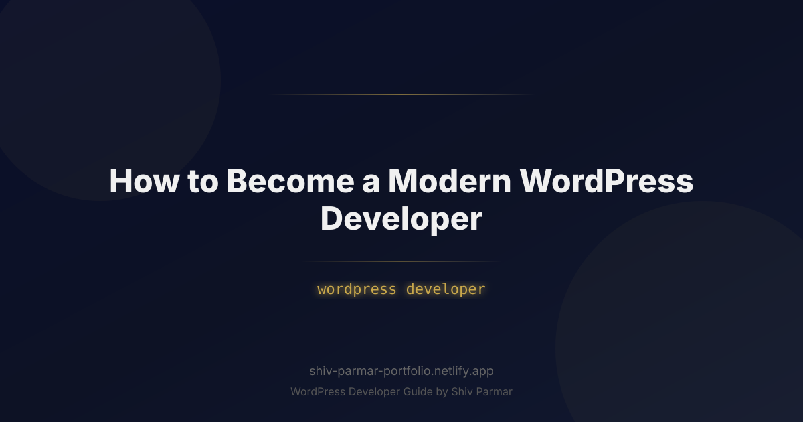

How to Become a Modern WordPress Developer | Shiv Parmar
Table of Contents
The web development landscape has shifted dramatically over the past few years. Gone are the days when you could throw together a bloated theme, install forty generic plugins, and call yourself a professional. Today, building with the world's most popular content management system requires a completely different mindset. If you want to stand out, command high-end rates, and build blazing-fast, secure websites, you need to evolve beyond the old ways of doing things. You need to become a modern WordPress developer.
Whether you are transitioning from traditional front-end development, upgrading your legacy PHP skills, or starting fresh in the tech industry, mastering the contemporary WordPress ecosystem is a game-changer. This comprehensive WordPress guide is designed to take you from a basic site builder to an elite developer who builds enterprise-grade digital experiences using Gutenberg blocks, modern JavaScript frameworks, and headless architectures.
What is a Modern WordPress Developer?
A modern WordPress developer is a versatile software engineer who leverages the core open-source platform not just as a blogging tool, but as a robust application framework. Unlike traditional site integrators who rely entirely on pre-built page builders and off-the-shelf themes, modern developers build custom solutions tailored precisely to client and user needs.
At its core, modern WordPress development bridges the gap between classic PHP-driven templating and modern JavaScript interactivity. While the platform still relies heavily on a PHP backend, the presentation layer has undergone a revolution. Developers today work extensively with the WordPress REST API, WP-CLI, custom Gutenberg block development using React, and headless (decoupled) setups where WordPress serves purely as a content repository.
Ultimately, being a modern WordPress professional means prioritizing performance, accessibility, security, and developer experience (DX). You write clean, maintainable code, utilize version control, and automate your deployment pipelines just like any other high-level software engineer.
Why Modern WordPress Matters Today
With countless website builders and SaaS alternatives flooding the market, some skeptics question the longevity of the platform. However, the data tells a completely different story. WordPress powers over forty percent of all websites on the internet. Enterprises, media giants, and high-growth e-commerce brands continue to rely on the platform because of its unmatched flexibility, ownership model, and scalability.
The table below highlights the stark contrast between legacy site building and modern WordPress development:
| Legacy Approach | Modern WordPress Development |
|---|---|
| Heavy reliance on commercial drag-and-drop page builders | Custom Gutenberg blocks and native block patterns |
| Monolithic themes bloated with unused features | Lean, performant custom themes or decoupled headless setups |
| Manual FTP file uploads and direct-to-server edits | Git-based version control, CI/CD pipelines, and local environments |
| Hardcoded data structures using basic custom fields | Robust data models via Advanced Custom Fields and the REST API |
| Ignoring modern JavaScript frameworks (React) | Leveraging React for interactive block components and dashboard tools |
Adopting modern practices matters because client expectations have skyrocketed. Websites must load in under two seconds, pass strict Core Web Vitals audits, and offer seamless editing experiences for content teams. By mastering modern techniques outlined in this WordPress guide, you position yourself as a high-value technical consultant rather than a commoditized theme installer.
Step-by-Step Guide to Becoming a Modern WordPress Developer
Transitioning into a skilled professional requires a structured roadmap. You cannot learn everything overnight, but by following this step-by-step approach, you will build a solid foundation that prepares you for complex enterprise projects.
Step 1: Master the Fundamentals (HTML, CSS, and Modern JavaScript)
Before touching a single line of PHP, you must have an elite grasp of web fundamentals. Semantic HTML5, modern CSS (Flexbox, Grid, and CSS custom properties), and vanilla JavaScript (ES6+) are non-negotiable.
Because the WordPress block editor (Gutenberg) is built entirely on React, JavaScript is more important than ever for a WordPress developer. You should feel comfortable with modern JS concepts such as arrow functions, array methods (map, filter, reduce), promises, async/await, and ES6 module imports.
Step 2: Understand PHP and the WordPress Core Architecture
WordPress is written in PHP, so understanding the language is essential for backend logic, custom plugin development, and theme templating. You do not need to be a PHP wizard on day one, but you must understand object-oriented programming (OOP) principles within PHP, namespace usage, and how to interact with the WordPress database safely.
Familiarize yourself with the WordPress lifecycle, actions, and filters (the plugin API). Understanding how hooks work allows you to modify core behavior without hacking core files:
// Example of adding a custom action hook in functions.php
function my_modern_custom_init() {
// Register custom post types or custom rewrite rules here
register_extended_post_type( 'portfolio', array(
'menu_icon' => 'dashicons-portfolio',
'supports' => array( 'title', 'editor', 'thumbnail' ),
) );
}
add_action( 'init', 'my_modern_custom_init' );
Step 3: Set Up a Professional Local Development Environment
Stop developing directly on live staging or production servers. Modern development demands a reliable local environment that mirrors production.
Tools like Local (formerly Local by Flywheel), DDEV, or Docker allow you to spin up isolated local environments in seconds. Pair your local server with a professional code editor like Visual Studio Code, equipped with extensions for PHP Intelephense, GitLens, Prettier, and ESLint.
Step 4: Embrace Git and Version Control
If you aren't using Git, you aren't a modern developer. Version control allows you to track code changes, collaborate with other engineers, and roll back broken deployments instantly.
Learn how to initialize a Git repository for your themes and plugins, write descriptive commit messages, and push your code to platforms like GitHub, GitLab, or Bitbucket. Implement a `.gitignore` file to ensure you never commit environment configuration files, build directories like `node_modules`, or heavy media uploads.
Step 5: Build Custom Gutenberg Blocks
The days of relying solely on classic PHP theme templates for layout are fading. The Gutenberg block editor is the future of WordPress content creation. As a modern WordPress developer, you must learn how to build custom blocks using `@wordpress/create-block` scaffolding tool and React.
Building custom blocks gives you granular control over what content editors can manipulate, ensuring design integrity while keeping the codebase incredibly lean. Here is a brief look at how a block configuration file (`block.json`) is structured:
{
"$schema": "https://schemas.wp.org/trunk/block.json",
"apiVersion": 3,
"name": "my-plugin/hero-banner",
"title": "Hero Banner",
"category": "layout",
"icon": "cover-image",
"description": "A custom modern hero banner block with CTA.",
"supports": {
"html": false,
"align": [ "wide", "full" ]
},
"textdomain": "my-plugin",
"editorScript": "file:./index.js",
"editorStyle": "file:./index.css",
"style": "file:./style-index.css"
}
Step 6: Leverage the WP-CLI and Automated Build Tools
Efficiency separates amateurs from professionals. WP-CLI (Command Line Interface for WordPress) allows you to manage installations, activate plugins, create database backups, and run updates directly from your terminal much faster than clicking through the wp-admin dashboard.
Additionally, integrate build tools like Webpack, Vite, or Gulp into your workflow to compile Sass into CSS, transpile modern JavaScript, and optimize assets for production deployment automatically.
Best Practices for Modern WordPress Development
Writing functional code is only half the battle. To build resilient, enterprise-ready digital products, you must adhere strictly to industry-standard best practices.
Sanitize, Validate, and Escape Data: Security should be your top priority. Never trust user input. Always sanitize data before saving it to the database, validate data types, and escape all output rendered on the frontend to prevent Cross-Site Scripting (XSS) and SQL injection vulnerabilities.
Prioritize Performance and Core Web Vitals: Modern search engines heavily penalize slow websites. Optimize your custom themes by eliminating unnecessary script loads, deferring non-critical JavaScript, serving next-gen image formats (like WebP), and utilizing object caching mechanisms like Redis or Memcached.
Write Clean, Documented Code: Follow official WordPress Coding Standards for PHP, JavaScript, CSS, and HTML. Use descriptive variable names, keep functions small and single-purpose, and document complex logic using inline comments so that other developers can easily maintain your work in the future.
Implement Continuous Integration (CI/CD): Automate your testing and deployment workflows. Use GitHub Actions or Bitbucket Pipelines to run code linters, test builds, and automatically deploy code changes to staging or production servers upon merging pull requests.
Common Mistakes to Avoid
Even experienced developers occasionally fall into bad habits. Being aware of these common pitfalls will save you countless hours of debugging and client frustration.
Modifying Core Files: This is the cardinal sin of WordPress development. Never edit core WordPress files, parent theme files, or third-party plugin code directly. If an update runs, your changes will be wiped out instantly. Always use child themes, custom plugins, or hooks and filters.
Over-Reliance on Bloated Plugins: Installing a separate plugin for every minor feature destroys website performance and creates severe security vulnerabilities. Learn how to write lightweight custom functionality yourself instead of relying on unmaintained third-party plugins.
Neglecting Mobile Responsiveness: Designing only for desktop monitors is unacceptable. Always build with a mobile-first philosophy, testing your custom themes and Gutenberg blocks across various screen sizes and mobile operating systems.
Ignoring Accessibility (a11y): Ensure your themes and custom blocks adhere to Web Content Accessibility Guidelines (WCAG). Use semantic HTML landmarks, proper ARIA attributes, ensure high color contrast ratios, and guarantee full keyboard navigation support for users with disabilities.
By avoiding these missteps and embracing the methodologies outlined throughout this WordPress guide, you will solidify your reputation as a trusted, elite WordPress developer capable of tackling the most demanding web projects in the industry.
Conclusion
Becoming a modern WordPress developer is an exciting and rewarding journey that bridges robust back-end engineering with cutting-edge front-end technologies like block creation, modern JavaScript, and Full Site Editing. As outlined throughout this comprehensive WordPress guide, the platform has grown far beyond its origins. Thriving in today’s landscape requires moving past legacy habits, writing clean PHP, and continuously adapting to the rapid evolution of the WordPress ecosystem.
Ultimately, mastering modern development comes down to hands-on practice, curiosity, and building real-world solutions that prioritize performance, security, and exceptional user experience. By staying active in the community and consistently sharpening your technical toolkit, you can build a future-proof career in the web development industry.
If you are looking for a skilled wordpress developer to bring your next project to life, Shiv Parmar is available for custom WordPress development work worldwide. From bespoke theme and plugin development to full-scale platform builds, get in touch today to create fast, scalable, and modern digital experiences.